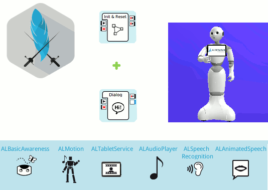
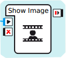

Sample 3: a first story application¶
This is a typical, well designed, simple story application which uses QiChat.
Content outline: Pepper tells a story based on Alexandre Dumas’ novel: The Three Musketeers.
Guided Tour¶
Let’s discover how it works.
The main behavior of this application contains 3 boxes: Init & Reset, Dialog Box and a modified Show Image Box.
Init & Reset¶
Aim
Ensure that Pepper:
- is in the right state before starting the story,
- is set back to its initial state after the story is finished.
How it works
This is the first box being triggered, because it is directly linked to the to the onStart input of the Application.
Double-click the Init & Reset box to open it.
Let’s read the 2 main methods: onInput_onStart and onUnload.
The onInput_onStart method is executed when the application is started, to:
Deactivate ALAutonomousMoves and ALBasicAwareness.
Disable the body language of ALAnimatedSpeech.
Set up the tablet by changing its background color and displaying the first image.
Preload all tablet images contained in the html folder.
Go to the Stand posture.
Depending on the success or the failure of the goToPosture function call, it will be the success or the failure output.
If successful, the Dialog Box is started, otherwise the application quits.
def onInput_onStart(self): try: self.amoves.setBackgroundStrategy("none") except Exception as exc: self.log("Unable to disable autonomous moves: %s" % str(exc)) try: self.ba.stopAwareness() except Exception as exc: self.log("Unable to stop awareness: %s" % str(exc)) try: self.animatedSpeech.setBodyLanguageModeFromStr("disabled") except Exception as exc: self.log("Unable to disable body language: %s" % str(exc)) self._setup_tablet() self._preload_images() self.postureProxy.setMaxTryNumber(3) result = self.postureProxy.goToPosture("Stand", 0.8) if(result): self.success() else: self.failure()
The onUnload method of the box is executed when the application quits, to:
Reactivate ALAutonomousMoves and ALBasicAwareness.
Hide the current tablet image.
Enable the body language of ALAnimatedSpeech.
def onUnload(self): try: self.amoves.setBackgroundStrategy("backToNeutral") except Exception as exc: self.log("Unable to enable breathing: %s" % str(exc)) try: self.ba.startAwareness() except Exception as exc: self.log("Unable to start awareness: %s" % str(exc)) self.postureProxy.stopMove() try: self.tablet.hideImage() except Exception as exc: self.log("Unable to hide image: %s" % str(exc)) try: self.animatedSpeech.setBodyLanguageModeFromStr("contextual") except Exception as exc: self.log("Unable to enable body language: %s" % str(exc))
Dialog Box¶
Aim
Ensure that Pepper:
- tells the story in the right order,
- launches animations and sounds when needed,
- displays the right images on his tablet using the Show Image Box.
How it works
This box is triggered when the Init & Reset box ends successfully, thanks to its onStart input linked to the success output of the Init & Reset box.
Double-click the 3-musketeer-story_enu.top file in the Project Files > dialog folder to open the topic file.
Let’s read the QiChat syntax of the topic file.
The Dialog Lexicon is included to get access to global concepts ~yes, ~no, ~joyful and ~neutral.
topic: ~3-musketeer-story() language: enu include:lexicon_enu.top
Concepts are used to store the content of the story. including necessary breaks, speaking rate and body language mode.
concept:(louis) \RSPD=85\ \pau=500\ Under Louis the 14th's reign, in the great city of Paris \Pau=500\, the cardinal is plotting. \RSPD=100\When the onStart input of the Dialog box is triggered, the topic is activated and launches the first proposal.
u:(e:onStart) ^nextProposal proposal: ^run(peppers-three-musketeers-story/animations/brass-band) ~break2000 ^nextProposal
Animations are behaviors in the Project Files > animations folder and are launched either by the ^run tag, if speech needs to be suspended, or by the ^start and ^wait tags, if speech needs to be executed in parallel with the animation.
Every proposal calls the next proposal when it is finished. However, in the last proposal the robot waits for a human input or the event Dialog/NotSpeaking20 to be triggered. In any case the $onStopped event/output of the Dialog Box is triggered and thus the application quits.
proposal: ^start(peppers-three-musketeers-story/animations/louis) ~louis ^wait(peppers-three-musketeers-story/animations/louis) ^nextProposal proposal: ^run(peppers-three-musketeers-story/animations/cardinal) ~break3000 ^nextProposal
Tablet Images are changed either by Show Image boxes inside the animation behaviors or by the $showImage event inside QiChat, which triggers the Show Image Box in the main behavior.
proposal: ~end $showImage=end.png ~question $showImage=credits.png u1:(~yes) ~answerYes $onStopped=1 u1:(~no) ~answerNo $onStopped=1 u1:(e:Dialog/NotSpeaking20) $onStopped=1
Show Image Box¶
Aim
Display an image on the tablet, when the showImage output of the Dialog Box is triggered.
How it works
This is a modified Show Image box, which receives the ImageUrl as a string through its onStart input instead of retrieving it from its ImageUrl parameter.
Try it!¶
Try the application.
| Step | Action |
|---|---|
In the Robot applications panel panel, click the
 Package and install the current project on the robot button.
Package and install the current project on the robot button. |
|
Make sure autonomous life is on. If not, click the |
|
Launch the application. Orally
Through the tablet
|
 Turn autonomous life on button.
Turn autonomous life on button.{kind=link}
{kind=link}
{kind=link}
{kind=link}
You may also try the behavior only, by clicking on the  Play button.
Play button.
Note that this example will only works correctly on a real Pepper, since Dialog Lexicon and ALTabletService are not present on a virtual robot.
Make it yours!¶
Edit the part of the content you want to customize: let’s say the concepts in the topic file.
Want to package it?¶
| Step | Action |
|---|---|
Customize its properties. You can keep most of the properties as they are, but the following ones must be adapted:
|
|
| Package it. |